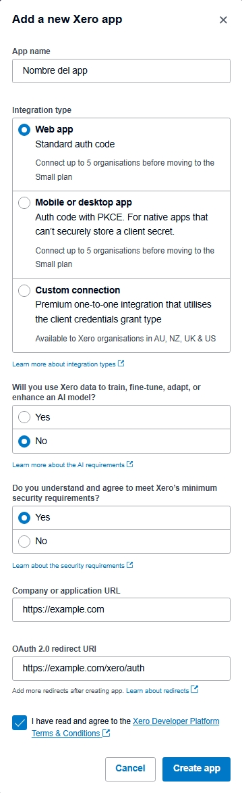
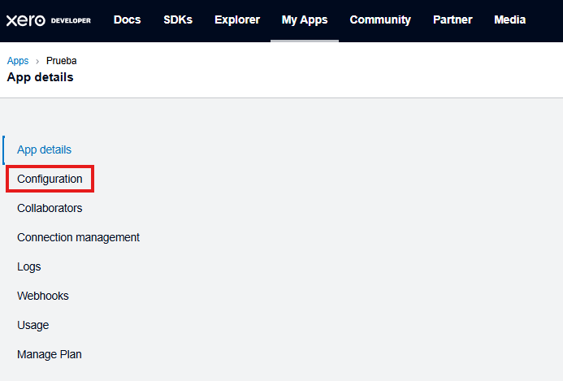
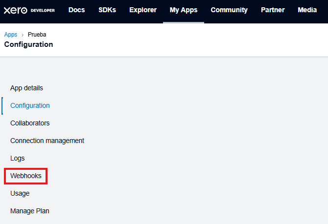
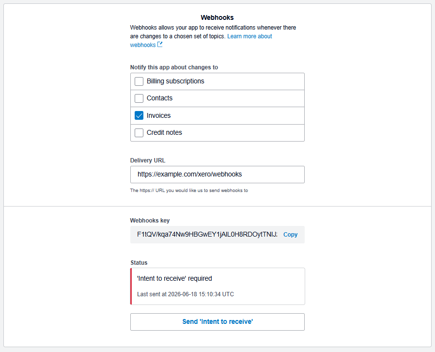

Pasos de instalación¶
1. Instalar la versión apropiada de Python¶
Navega al sitio web de Python y descarga la versión más reciente de Python 3.13. Es posible usar gestores de entornos virtuales como Conda, pero eso no se va a tratar aquí por temas de simplicidad.
Importante
Este proyecto ha sido validado únicamente en Python 3.13. Es posible que funcione en versionas más recientes o más antiguas, pero no podemos garantizarlo con certeza.
Adicionalmente, instalar Node.js también es necesario.
2. Instalar las dependencias¶
Con requirements.txt¶
En el directorio base del proyecto, se puede encontrar un archivo llamado requirements.txt. Este archivo es una lista de todas las dependencias que usa el código. Sabiendo esto, se pueden ejecutar alguno de los siguientes comandos para llevar a cabo este proceso:
pip install -r requirements.txt
Para Windows:
py -m pip install -r requirements.txt
Truco
Anotar las nuevas dependencias en requirements.txt mientras se continúa con el desarrollo del proyecto facilita la instalación de estas para futuros usuarios.
Manualmente¶
A continuación, se incluyen los nombres de los paquetes de las dependencias para que puedan ser instaladas de forma manual con pip, el administrador de paquetes de Python:
3. Crear una aplicación en Xero¶
Para los pasos posteriores, se ocupan varios datos suministrados por Xero al crear una aplicación. Sigue las siguientes instrucciones:
Ve a My Apps en Xero Developer e inicia sesión
Crea una nueva app e ingresa los datos solicitados. Cambia
https://example.compor el URL de tu servidor.
Selecciona la nueva aplicación en la lista y navega a la pestaña de Configuration.

Navega al fondo de la página. Guarda el Client ID y haz clic en Generate a Secret. Seguidamente, guarda el Client Secret en algún lugar seguro.

Navega a la pestaña de Webhooks.

En Webhooks, copia la configuración mostrada y copia el Webhooks key que será generada.

Nota
Recuerda hacer clic en Send “Intent to receive” una vez el servidor esté funcionando. Esto le permite a Xero verificar que el servidor está en funcionamiento para comenzar a mandarle notificaciones.
4. Configurar el servidor¶
El servidor necesita una variedad de variables de entorno almacenadas en un archivo .env. Este se puede configurar automáticamente con una guía interactiva ejecutable con el siguiente comando:
python -m servidor.configurar
Para Windows:
py -m servidor.configurar
Crear el archivo .env¶
Se te va a preguntar lo siguiente:
¿Deseas configurar los parámetros opcionales? s/N
>
Nota
Se recomienda omitir por completo las variables opcionales. Escribe N y presiona Enter.
A continuación, se te pedirá que ingreses el valor de cada una de las variables. Se puede encontrar más información sobre estas en la documentación de secretos._Entorno. Un ejemplo de una de estas solicitudes es:
Introduce un valor para ID_CLIENTE_XERO
>
Escribe el valor apropiado para la variable y presiona Enter. Una vez termines, podrás ver que se ha creado un archivo .env.
Truco
Puedes cambiar la configuración en cualquier momento editando a .env manualmente. No se pueden añadir variables no contempladas dentro de secretos._Entorno porque, en caso contrario, se producirá un error en el código.